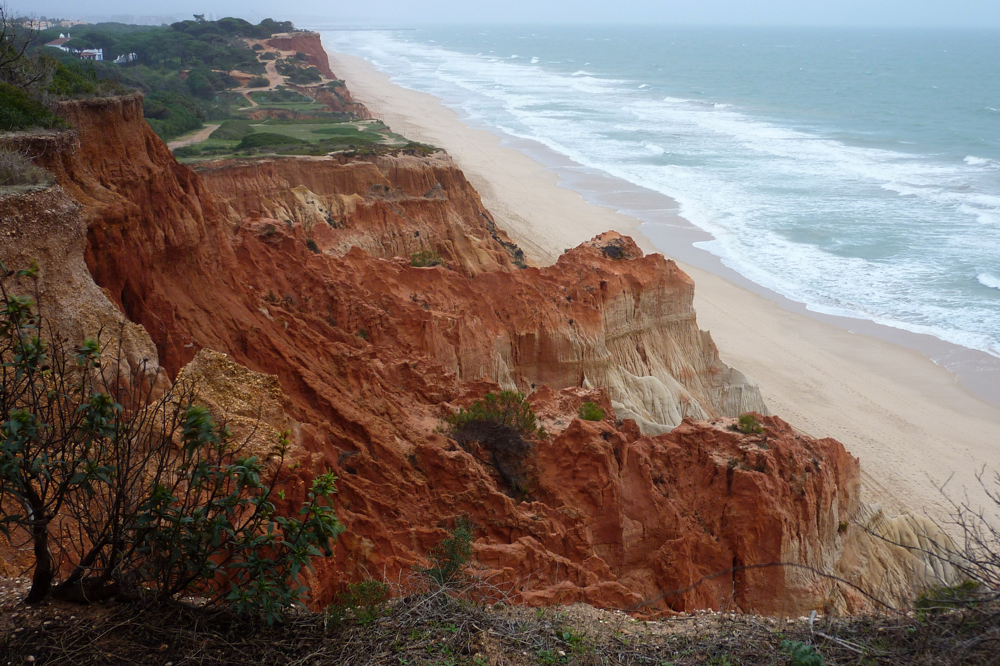

Praia da Falésia clifftop
Easy walk
Iconic orange cliffs with pine trees above. Gentle clifftop path with viewpoints all the way along. Stay back from the crumbling edges. Trainers and water are all you need.

Cerro da Vila Roman Ruins
Friday only
A real Roman villa - mosaics, fish-salting tanks, small museum. Closed Saturday and Sunday, so Friday morning is the only window this trip. Allow 60–90 minutes.

Loulé Saturday Market
Saturday morning
The famous Moorish red-domed market hall with farmers' and gypsy markets spilling around it. Live music inside the hall. Petiscos at the stalls for lunch. Loulé castle combines perfectly.

Quarteira promenade
Always on
Palm-lined paved promenade between the apartment and Vilamoura marina. Flat, easy, scenic. At the eastern end: the working fish port and morning fish market, free and authentic.